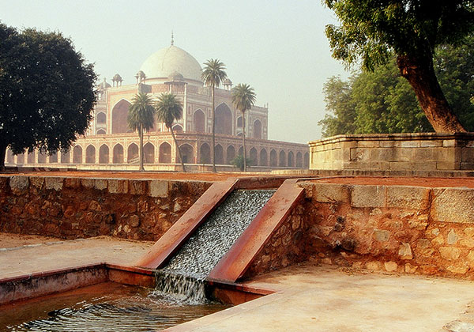

EXTERIOR

- MYTHS
- Haunted Tomb: Similar to many historical sites, there are myths about Humayun's Tomb being haunted by the spirits of past rulers or soldiers. However, there's no substantial evidence to support these claims, and the tomb is primarily a tourist attraction and historical site.
- Treasure Vaults: Some myths suggest that there are hidden treasure vaults beneath Humayun's Tomb, containing riches and artifacts from the Mughal era. However, no significant treasures have been found within the tomb's premises.
- Mysterious Passages: There are myths about secret passages and underground tunnels beneath Humayun's Tomb, which were supposedly used by the Mughal emperors for escape or other purposes. However, no such passages have been discovered or confirmed.
- Cursed Monument: There's a myth that Humayun's Tomb is cursed due to the tragedies and misfortunes that befell Humayun during his reign. However, there's no historical evidence to suggest such a curse associated with the monument.
- Divine Intervention: Some myths suggest that the construction of Humayun's Tomb involved divine intervention or supernatural forces, enabling its completion in a relatively short span of time. However, the tomb's construction was primarily the result of skilled craftsmanship and architectural planning.
INTERIOR
- FACTS
- Mughal Architectural Marvel: Humayun's Tomb stands as a testament to the grandeur and sophistication of Mughal architecture. Its intricate design, symmetrical layout, and harmonious blend of Persian and Indian architectural styles make it a masterpiece of its time.
- Historical Legacy of Humayun: Built-in the 16th century, Humayun's Tomb serves as the final resting place of the Mughal Emperor Humayun, highlighting the historical significance of the Mughal Empire in shaping India's cultural and architectural landscape.
- UNESCO World Heritage Site Recognition: The designation of Humayun's Tomb as a UNESCO World Heritage Site in 1993 underscores its universal cultural value and importance in the preservation of humanity's shared heritage. It stands as a proud symbol of India's rich history and architectural heritage.
- Garden Charbagh Layout: Surrounding the tomb is a meticulously planned charbagh (four-quartered) garden, a hallmark of Mughal garden design. The garden's symmetrical layout, intersecting pathways, and lush greenery create a serene and harmonious ambiance, enhancing the tomb's aesthetic appeal.
- Influence on Subsequent Architecture: Humayun's Tomb has left an indelible mark on the architectural landscape of India, influencing the design and construction of subsequent Mughal monuments, including the iconic Taj Mahal. Its architectural innovations and design elements continue to inspire architects and historians to this day.